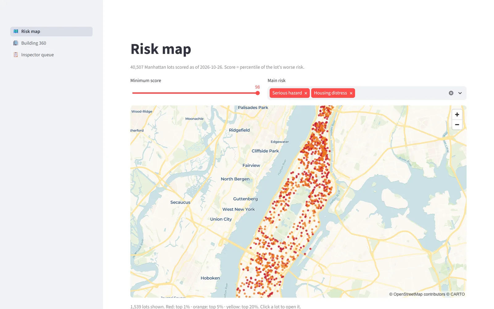
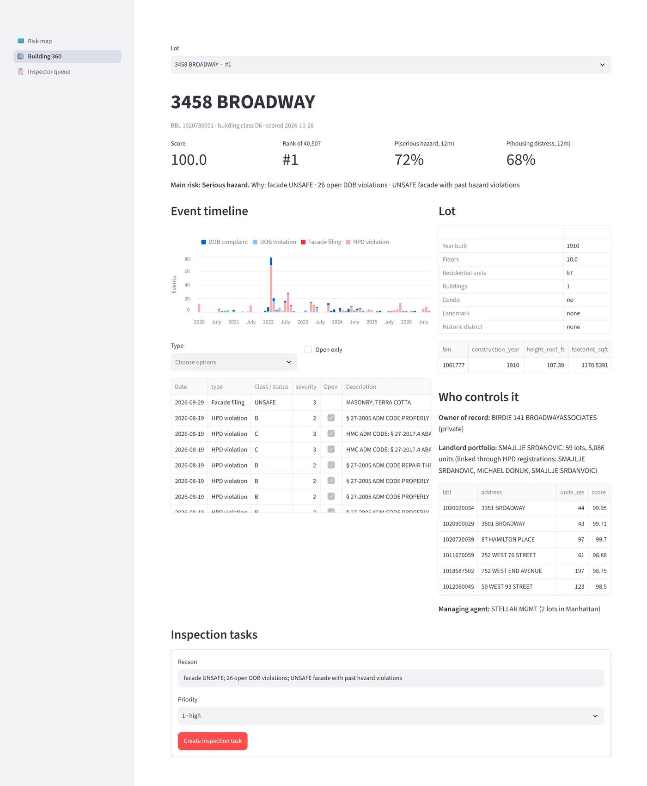
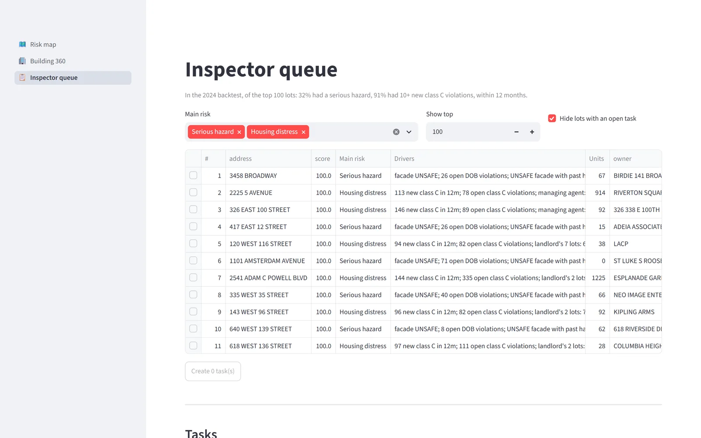

Which buildings should an inspector visit first, and why?
NYC's building data is split across agencies that each key it differently. I linked eight of those datasets into one ontology of landlords, lots, buildings and events, scored every Manhattan lot with an explainable model, tested it on a year it never saw, and built the tool a planner would use to act on it.

How it works
From raw city data to a decision someone can act on, with the ontology in the middle.
Eight sources
Violations, complaints and facade filings from DOB and HPD, PLUTO tax lots, building footprints, and HPD landlord registrations, pulled from the Socrata API.
One key per record
Every record gets a building (BIN) and a tax lot (BBL): the BIN first, then block/lot, then condo unit lot → billing lot. Placeholder BINs and junk dates are dropped.
Landlords, not LLCs
Single-building LLCs are linked through shared head officers and owners in HPD registrations, so each lot knows the landlord and managing agent behind it.
Point in time
lot_features_at(date) counts only events before the date. The backtest and today's score run the same code, so nothing leaks from the future.
Explainable
One logistic regression per outcome over 0–1 components. The coefficients are the weights, so every lot gets its top drivers in plain words.
Write back
Planners create inspection tasks from a ranked queue, assign inspectors and record outcomes. Those outcomes are the next model's labels.
The owner on paper is rarely the landlord
Most Manhattan rentals are each held by their own LLC. HPD registrations name the people behind them. Linking lots that share a head officer, an owner or a corporate-owner name turns 27,800 lots into 13,000 landlord portfolios. A landlord's track record across all their buildings then becomes a risk signal, and it helped on the held-out year.
Does it work?
Every lot was scored as of 1 January 2024 using only earlier data, then checked against what happened in 2024. The model's inputs were chosen on a separate validation year, so 2024 was used once, as a test. Bars show the share of the 100 highest-ranked lots that had the outcome.
Housing distress
10+ NEW CLASS C VIOLATIONS IN 12 MONTHS · BASE RATE 3.6%
Serious hazard
DOB HAZARD OR UNSAFE FACADE IN 12 MONTHS · BASE RATE 1.6%
My first version lost
Weights I set by hand lost to naive baselines: one score for two different risks diluted both. One model per outcome fixed it and stayed explainable.
Explainable costs nothing here
For housing distress the explainable model matches gradient boosting on overall ranking (average precision 0.572 vs 0.570).
Repeat offenders still win at the top
For hazards, "had a hazard before" beats every model in the top 100. A validation-year gain didn't replicate, and I didn't tune on the test year to hide it.
The tool
A map, a 360° page per building, and a work queue whose actions are written back. It runs locally as a Streamlit app over DuckDB; a static browser version is hosted here: open the live tool.

